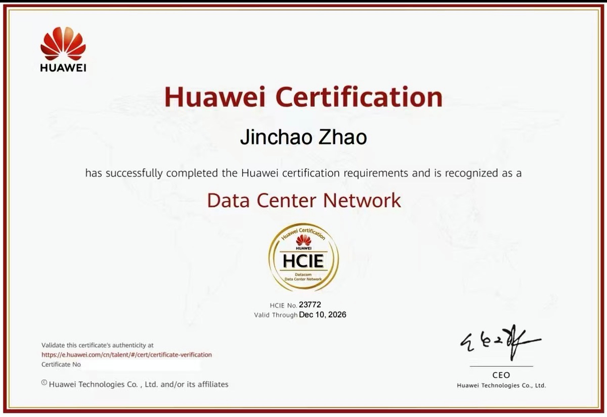

智教教学部
- 智慧教学空间建设与应用
- 智慧教学平台 + AI Agent 建设与应用
- AIGC 工具应用与智慧课程开发
- 教师数智化素养能力提升
01 TALENT DEVELOPMENT
聚焦前沿，深耕 AI、5G、大数据等关键数字技术领域；以实战为导向，提供分级、分类的定制化培训与认证，培养符合产业需求的紧缺人才。
COLLEGE
沉浸式教学，理论 + 实操双轨教学
FACULTY
政企校三方联动，共建顶级教学团队
横琴教研团队、华为技术专家
高校学术导师、科研机构专家、领域独立学者
行业实战精英、企业实操能手
CERTIFICATION
权威认证，就业通行证。依托华为 HCIA、HCIP、HCIE 三级职业认证体系，将课程学习、项目实训与岗位能力评价相衔接。
